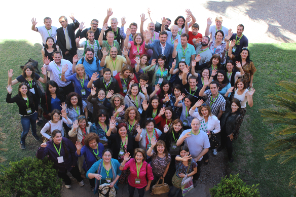
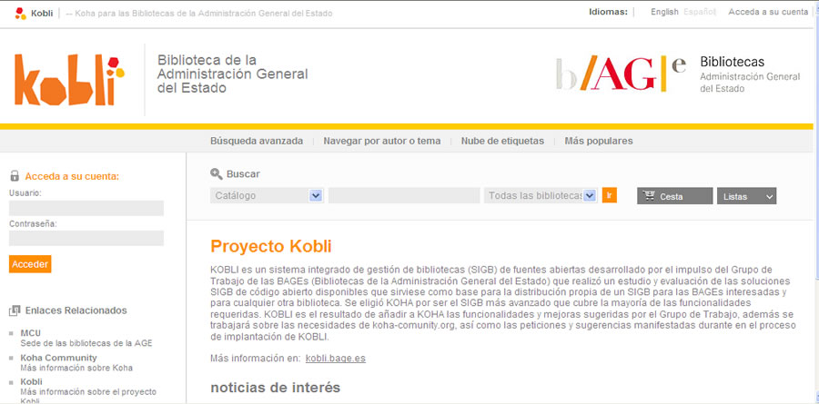
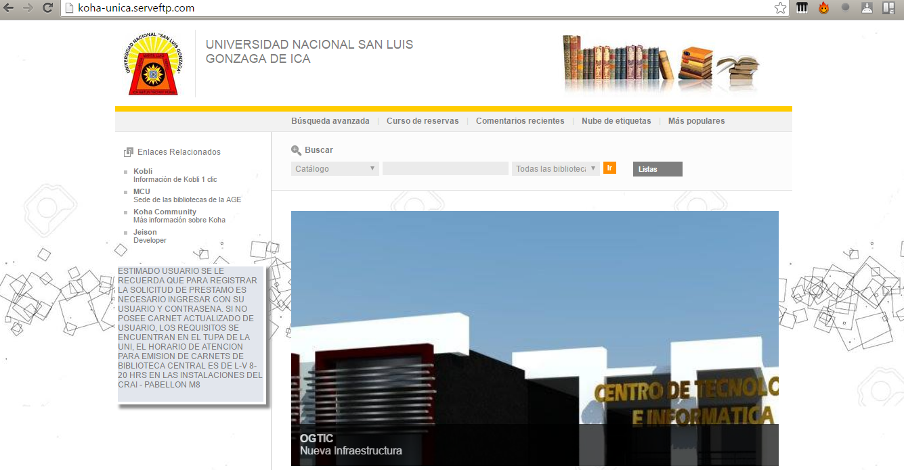
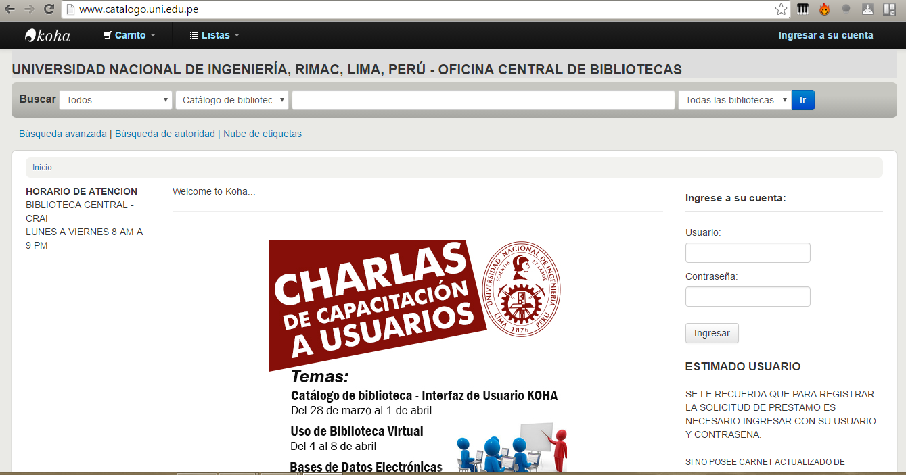
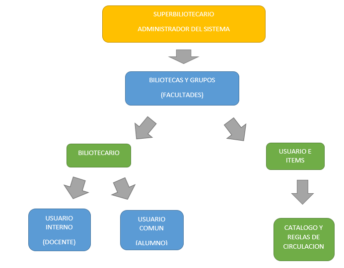
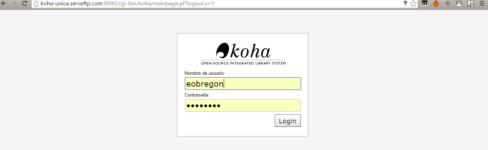
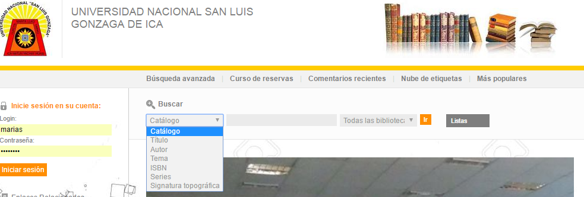
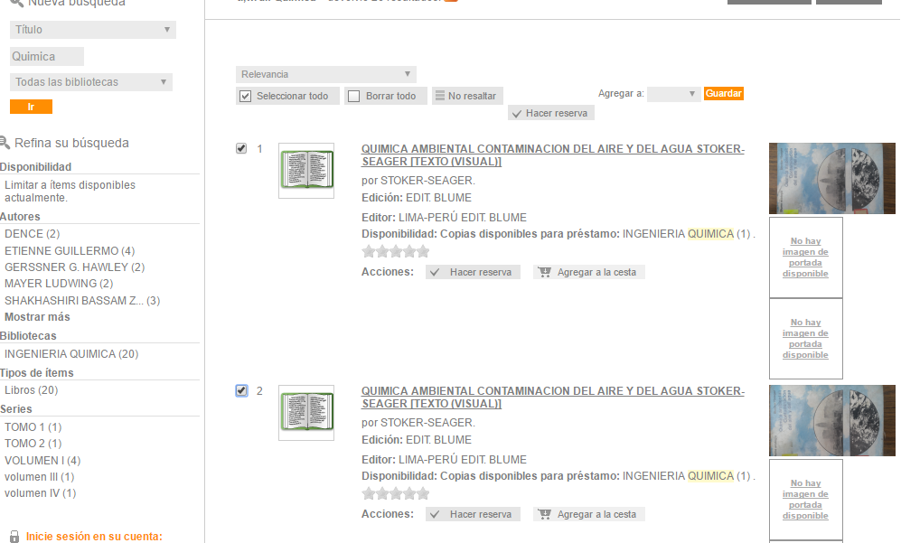
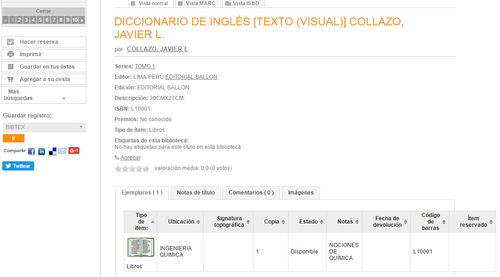

Jeison Castro Sairitupac
Backend Developer,analisis de sistemas , infraestructura de TI
Alumno de la Facultad de Ingenieria de Sistemas
Actualmente developer de la OGTIC
Transition Styles
Koha
Koha es un sistema integrado de gestión de bibliotecas, el primero de código fuente abierto liberado bajo la GNU General Public License. Koha proviene del maorí, y quiere decir obsequio, o donación.
Creacion
Fue creado en 1999 por Katipo Communications para la Horowhenua Library Trust en Nueva Zelanda. La primera instalación se logró en enero del 2000.
CARACTERISTICAS
Koha tiene todas las características previstas en un programa integrado de gestión de bibliotecas, incluyendo:
Interfaz simple, clara para bibliotecarios y usuarios.
Búsqueda configurable.
Listados de lectura de los usuarios.
El bibliotecario puede administrar la biblioteca remotamente, utilizando un teléfono móvil o un asistente personal.
Koha maneja un vasto repertorio de Informes, Reportes y Estadísticas favorecidas por el uso de una base de datos relacional.
koha-Kobli
Kobli es el resultado de añadir a Koha una parte de las funcionalidades sugeridas en el Informe de evaluación del Grupo de Trabajo, algunas de las cuales están ya incluidas por la comunidad Koha en versiones posteriores.
¿ Que diferencia hay entre kobli y koha ?
Kobli mantiene el núcleo de Koha y añade una serie de funcionalidades; por ejemplo un repositorio digital y mejoras en el módulo de catalogación.
KOHA-KOBLI PARA LA UNIVERSIDAD NACIONAL SAN LUIS GONZAGA DE ICA
Iniciativa
Inicialmente propuesta por el ing. Quimico Felipe Estuardo Yarasca , Ex director de la OGTIC , para su implementacion en la facultad de Quimica de la UNICA
Tomando como referencia otros sistemas de bilioteca de algunas universidades nacionales como por ejemplo koha-Uni

Junto con el Area de Desarrollo de sofware se empieza a descargar y modificar el codigo fuente para adaptarlo a los requerimientos de la Universidad.
FASES
1. Empezar por la Facultad de Ing. Quimica 2. Recoger datos basicos de libros, tesis y usuarios. 3. Sin solo hacerlo particular de dicha facultad ; sino mantener un formato general y reutilizable. 4. hacer el alta de catalogos de libros proporcionados en formato excel, al igual que el de usuarios. 5. Presentación, capacitación y correccion una vez en producción.
USUARIOS
Jerarquia de Usuarios
USUARIO BILIOTECARIO
Le corresponde acceso a la intranet
USUARIO ALUMNO Y DOCENTE
La ruta de acceso es la pagina webUSUARIOS, ALUMNOS Y DOCENTES
Login: Primera letra del nombre + Primer Apellido || primer Nombre
Contraseña: Nº de DNI de la persona
ejemplo: el usuario Carlos Mario Montoya Serna
Ingresara con : cmontoya + 21520666
CATALOGO
Es el registro de libros, tesis ,diapositivas, mapas etc. 
CATALOGO DE LIBROS
Nuevo VocabularioISBN = Codigo de Item = código de barras
Item = Existencia única del libro en la biblioteca
ejemplo : L10001
CIRCULACION
Reservas,prestamos, perdidas , informes ; viene a ser el trabajo propio de cualquier biblioteca
http://koha-unica.serveftp.com/
Para el usuariohttp://koha-unica.serveftp.com:9090/
Para el bibliotecario encargadoCaracteristicas
- Reserva
- Listas privadas
- Etiquetas
- Prestamo
- Cesta
- Comentarios
- Busquedas Avanzadas
- Redes Sociales
- Avisos
- Intuitivo
Usuarios
| Nombres y Apellidos | login | Contraseña | Categoria |
|---|---|---|---|
| Carlos Mario Montoya Serna | cmontoya | 21520666 | A |
| Maria Victoria Arias Gómez | marias | 21520777 | A |
| Beatriz Elena Osorio Laverde | bosorio | 21550676 | PT |
| Walter Darío Murillo González | wmurillo | 27530673 | PT |
Nuevos Objetivos
- expandir
- difundir
- incorporar
- capacitar